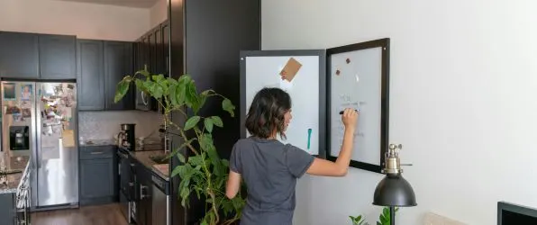
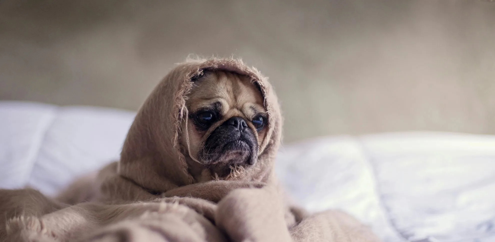
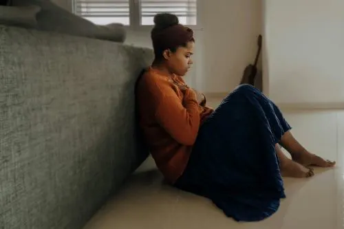
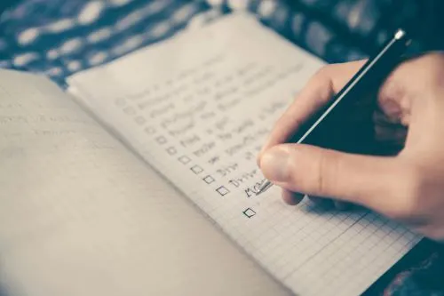
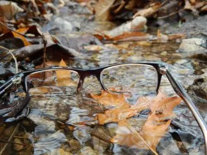

Ro i Hjemmet Stress og præsentations angst Angst Autisme og ADHD Depression, bipolar, borderline, mm.
Alle artikler At have angst som studerende- Tips til håndtering Gode rengøringsvaner giver overskud- Sådan gør du Hvordan håndterer man stress på studiet?- Effektive strategier